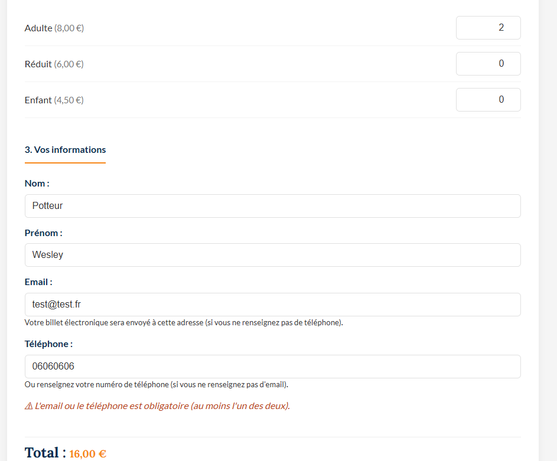
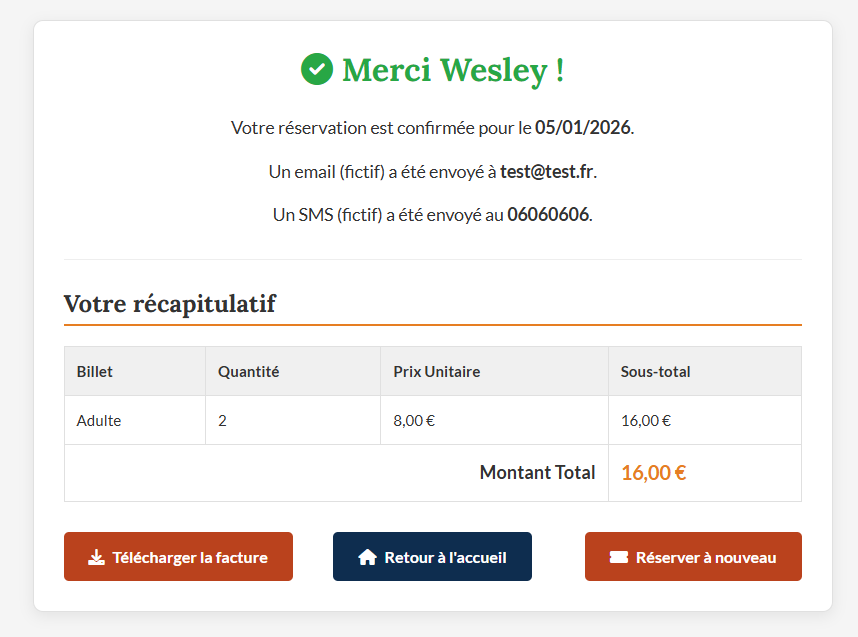

Billetterie du Fâ — PHP/MVC
Application complète de réservation de billets pour le site archéologique du Fâ (Barzan), développée en PHP 8 sans framework avec une architecture MVC, une base de données MySQL et une génération de factures PDF dynamiques.
1. Contexte & Besoin
Le site archéologique du Fâ fait face à une forte affluence estivale. L'objectif était de concevoir une application web pour fluidifier la gestion des entrées en permettant la réservation en ligne. Le projet a été réalisé en méthode SCRUM, avec PHP 8 sans framework et une architecture MVC imposée.
2. Architecture & Choix Techniques
- Langage : PHP 8 avec typage fort et attributs.
- Architecture : MVC (Modèle-Vue-Contrôleur) pour séparer la logique et l'affichage.
- Accès Données : Pattern DAO avec PDO pour sécuriser les requêtes SQL.
- Sécurité : Hashage des mots de passe, protection XSS et injection SQL.
3. Formulaire de Réservation
Formulaire dynamique permettant de choisir le type de visite et la quantité de billets par catégorie (Adulte, Réduit, Enfant). Le total se met à jour en temps réel côté client. Les informations personnelles (nom, prénom, email, téléphone) sont validées avant envoi, avec au moins un contact obligatoire.

4. Validation & Enregistrement
Côté back-end, le contrôleur prend en charge la validation des entrées, l'insertion en base de données via la couche DAO et la gestion des transactions SQL pour garantir l'intégrité des données.

5. Confirmation & Facture PDF
Une fois la commande validée, l'utilisateur reçoit un récapitulatif complet et peut télécharger sa facture générée dynamiquement grâce à la librairie FPDF.
